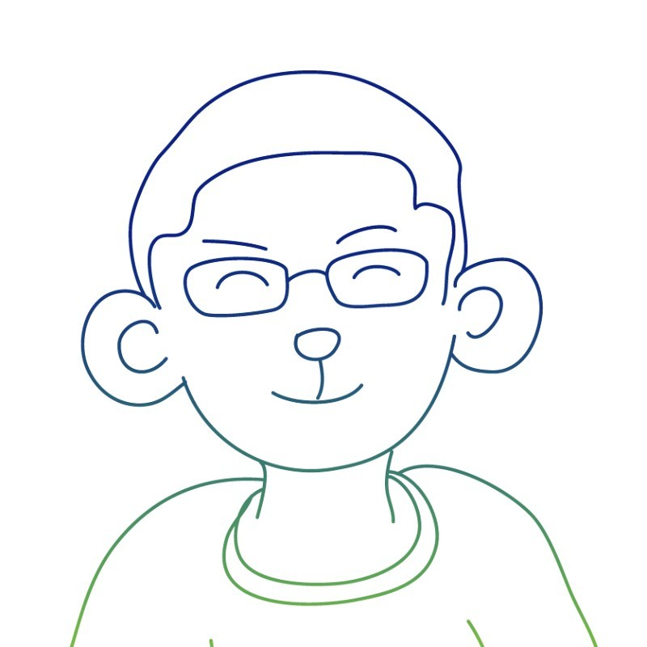
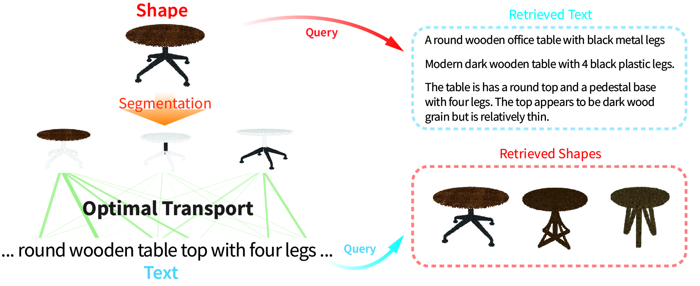
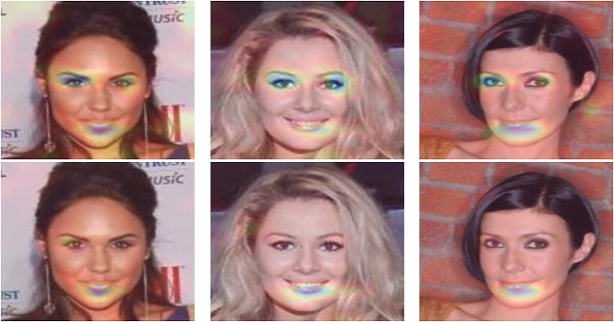

|
Bojian Wu · 吴博剑
I am currently a researcher at Tencent Games. Prior to this, I had working experience in Zhejiang University and Alibaba DAMO Academy.
I received my Ph.D. degree in Computer Graphics from University of Chinese Academy of Sciences in 2019, advised by Prof. Hui Huang. From July 2018, I spent half a year in The University of Tokyo, working with Prof. Yonghao Yue and Prof. Takeo Igarashi. I obtained the master's degree from University of Science and Technology of China under the supervision of Prof. Xuejin Chen in 2015. Before that, I got my bachelor's degree from Sichuan University in 2012 (early graduation).
Email /
Google Scholar /
LinkedIn /
Github
|

|
|
Research
I'm interested in computer graphics, image-based modeling and 3D reconstruction. My current works generally focus on how to infer 3D information from 2D images. (co-first author*, corresponding author†)
|
|

|
Parts2Words: Learning Joint Embedding of Point Clouds and Texts by Bidirectional Matching between Parts and Words
Chuan Tang,
Xi Yang,
Bojian Wu,
Zhizhong Han,
Yi Chang
CVPR 2023
paper
/
code
|
|

|
Directing DNNs Attention for Facial Attribution Classification using Gradient-weighted Class Activation Mapping
Xi Yang,
Bojian Wu,
Issei Sato,
Takeo Igarashi
CVPR 2019 Workshop on Explainable AI
paper
|
Last Updated: 2024.10.10 (Template From Here)
|